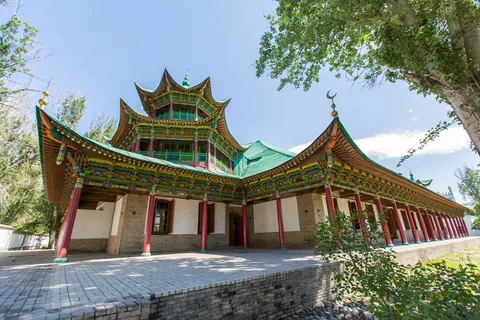
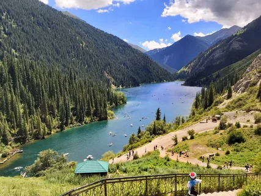
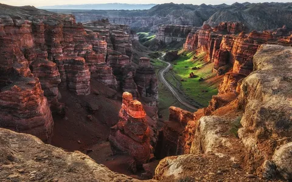
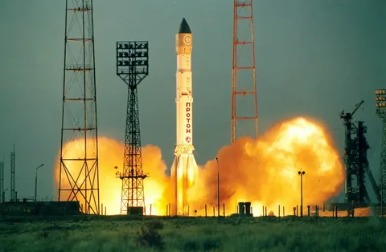
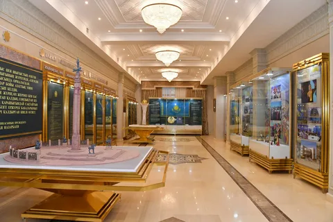
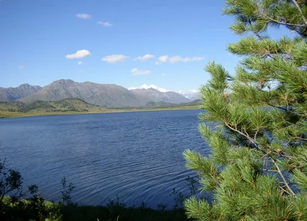

Шарын шатқалы
Үлкен каньонның "інісі" ретінде белгілі, бұл каньон өзінің Қызыл жартастарымен және ерекше формаларымен таң қалдырады.
Көбірек білу

Байқоңыр ғарыш айлағы
Ғарышқа алғаш адам ұшырылған жер(Юрий Гагариннің). Мұнда ғарышқа ұшу тарихын көруге болады.
Көбірек білу

Алматыдағы тұңғыш Президент мұражайы
Тарихи жәдігерлер мен артефактілер бар қызықты орын.
Көбірек білу

Зайсан көлі
Қазақстанның шығысындағы әдемі пейзаждарымен және белсенді демалу үшін мүмкіндіктерімен толтырылған әсем көл.
Көбірек білу